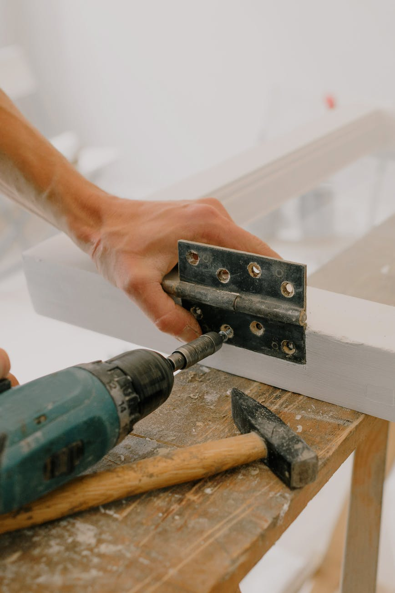
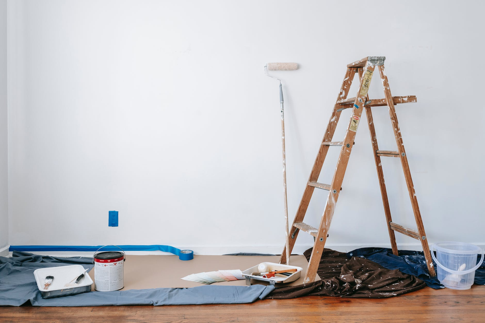
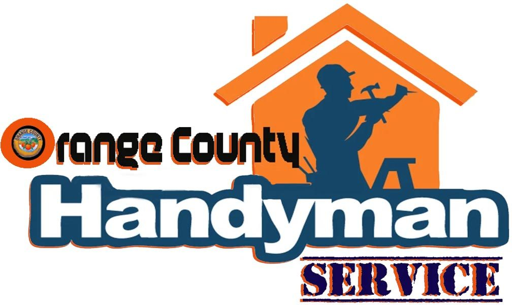

General handyman repairs
A focused section for the most common homeowner requests.
Irvine, CA
Handyman / home repair
The public site looks very small and generic, so this starter site focuses on clarity, service depth, and faster quote intent.
Photo highlights
The old gallery was using tiny or placeholder-quality images, so this version swaps in clearer job photos that match the company’s work better.


Brand mark
The logo is a branding asset, not a job photo, so it belongs in its own trust/identity block.

Services
This starter version keeps the service list simple and readable so the page can expand into more detailed service-area and job-type pages later.
A focused section for the most common homeowner requests.
Built to show practical service depth without fluff.
Helps the page feel concrete and easy to scan.
Useful for the smaller jobs that still matter to buyers.
Supports the parts of the job that need a neat finish.
Signals the area the business actually wants to win.
Service area
Irvine, Lake Forest, Tustin, Costa Mesa, and nearby Orange County communities.
FAQ
The starter copy is built around the common handyman jobs homeowners search for first, with a focus on quick, practical repairs.
The site is positioned for Irvine and nearby Orange County neighborhoods.
To make it easier for a homeowner to understand the services and take the next step.
Contact
This starter page ends with a direct, low-friction next step so a visitor can move from interest to contact quickly.